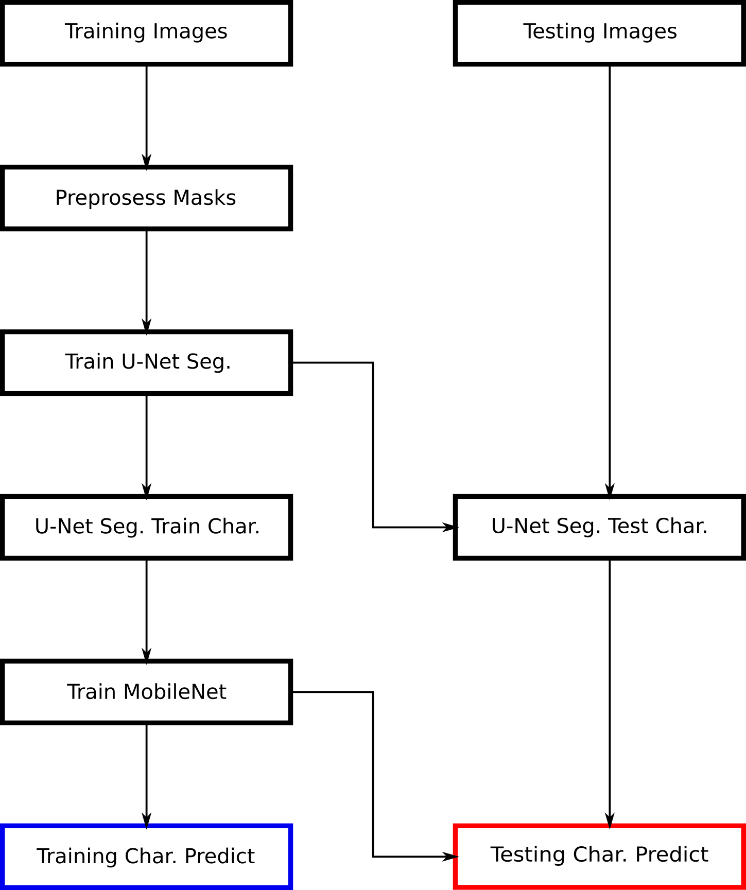

Project and Problems
This project originated as an attempt to solve a Kaggle challenge: https://www.kaggle.com/c/kuzushiji-recognition/overview/description. The goal of this challenge was to recognize and identify the location of Japanese calligraphic characters in scanned pages of old books. This proved more difficult than it might initially. Some pages in the training set are blank, some contain full page illustrations, mix illustrations and text, or text with irrelevant marginal notes.
Never having worked on more than toy computer vision projects I made a fundamental mistake in thinking I could come up with an original approach instead of starting with an existing approach such as using a Region Based Convolutional Neural Networks (R-CNN). This mistake led to me missing the deadline for the project and ending up with substandard results. I guess you live and learn. Still I hope to learn something in the process of writing up these results.
Working with a couple hundred dollars of off the shelf hardware meant I was a compute constrained. So I looked for an older less compute intensive deep learning model for image segmentation and another for character recognition. Using TensorFlow as my machine learning framework I choose to try U-Net for the former and MobileNet for the latter. My thinking at the time was that breaking the problem into two discrete steps of segmentation and recognition might make the problem easier. A high level block diagram of the model under training and testing is given below.
To simplify the problem I choose to only recognize the 500 most frequent characters in the training set. The 500 most frequent characters in the training set represent XX percent of the characters in the training set, which is also limits maximum possible accuracy of this character recognition model.
The first big problem with this block diagram occurred in the "U-Net Seg. Train Char." and "U-Net Seg. Test Char." blocks. The problem is not with U-Net's segmentation, which performs decently but with the mask ground truth provided. The figures below show the images above overlaid with the mask ground truth masks represented as black rectangles.

First clearly not all characters in the left page are masked. Some of these characters are marginal notes, others are characters which are not in the set of the 500 most frequent. Second the masks overlap so training U-Net to segment the ground truth masks of the training set will often result in clusters rather than individual characters being segmented.
Predicting characters segmentations based on ground truth segmentations like the ones above produced the following results. (ADD PRED SEG LAYERED IMAGES)
Initially I tried writing some ad-hoc algorithms to recognize rectangles in these predicted segmentations. It did go well. I realized that I could mitigate this problem by using multiple models to segment different randomly subsets of characters. I broke the 500 most frequent characters into 10 subsets of 500 randomly selected characters. This does not eliminate the problem of overlapping masks but it makes it less frequent. For instance in the images below only the masks from subset 1 are overlaid on the images.
ADD IMAGE(ADD training parameters for U-Net) The corresponding predicted segmentations for the subset_1 masks by U-Net for the images above are shown below as non-white pixels.
ADD IMAGEAs we can see yada yada......